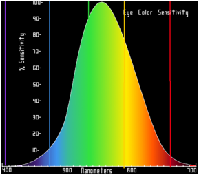
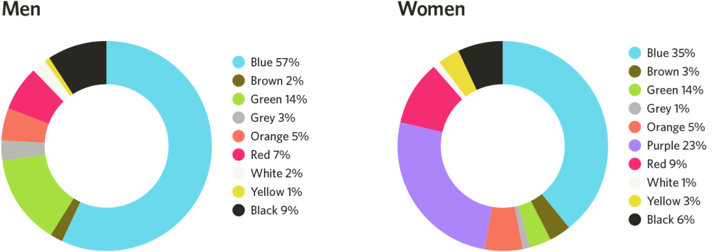
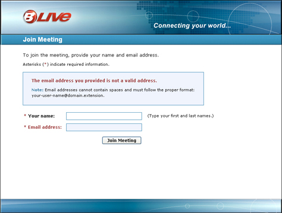
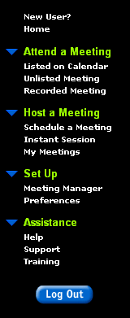
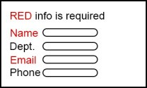
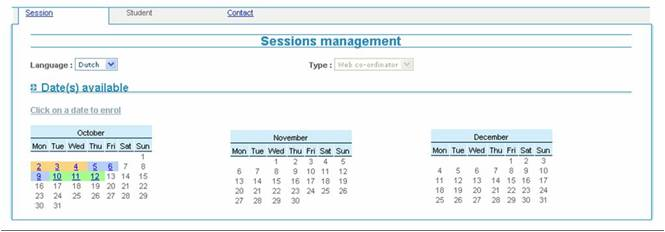
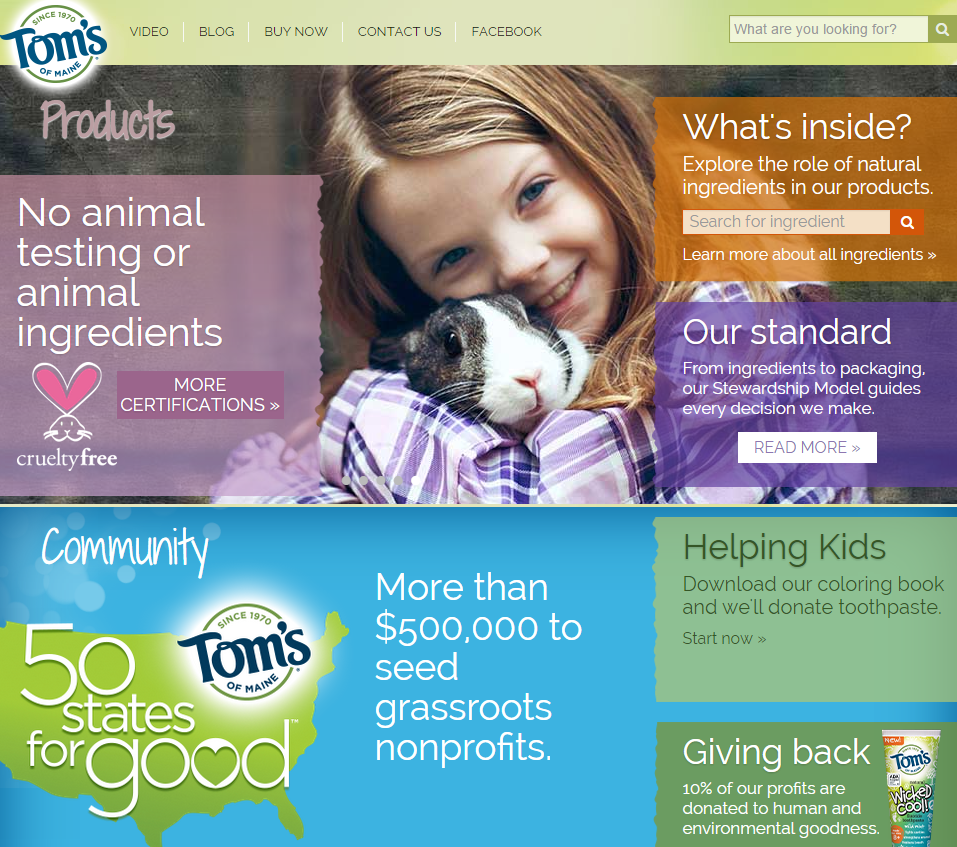

Fysiologische aspecten
Belang en gevaar van kleuren
Kleuren kunnen uw applicatie mooier, attractiever maken.
Kleuren kunnen uw applicatie ook onderuit halen en onbruikbaar maken.
Kleuren hebben een betekenis en die kan verschillen van regio tot regio. Voor deze regionale verschillen zie 'Toegankelijkheid - Internationalisering'
Enkele basisregels

- Kleuren vormen altijd een secundair zintuiglijk kanaal en ondersteunen het primaire kanaal (bv tekst, contrrols, links...);
- Zorg dat de kleuren consistent zijn met de rest van de applicatie en geef geen tegenstrijdige signalen;
- Gebruik kleuren zo weinig mogelijk voor esthetische redenen alleen, ondersteun de taak van de gebruiker hiermee;
- Zorg voor een goed toegankelijke combinatie, contrasten zijn zeer belangrijk;
- Hou rekening met de eigenschappen van uw doelpubliek;
- Neem professionele ontwerpers onder de hand voor dit werk, de meeste IT-ers zijn daar niet in thuis.

- Kleuren als enige drager van de boodschap;
- Onvoldoende contrast - zie ook Toegankelijkheid - kleurenblindheid en leeftijd;
- Teveel kleuren (het lijkt op een kleurboek, een amateuristisch schilderij);
- Gebruik geen combinatie rood/blauw op een beeldscherm, dit is lastig te interpreteren (chromostereopsis PDF
 );
); - Zware kleuren (hoge verzadiging) maken de ruis in de communicatie tot signaal.
Een goede werkwijze
1. Maak het ontwerp in grijstinten - dit is zeker belangrijk in een applicatie;
2. Voeg kleuren toe om bepaalde accenten te leggen
Betere bruikbaarheid en user experience met kleuren
Dit houdt in dat u kleuren doelgericht gebruikt.
- Gebruik kleuren voor het groeperen van pagina's en windows;
- Gebruik kleuren om groepen webpagina's van elkaar te onderscheiden;
- Gebruik kleuren om elementen visueel te groeperen;
- Gebruik kleuren om zones op een window of webpagina te onderscheiden;
- Gebruik kleuren om informatie te beklemtonen;
- Gebruik kleuren om hiërarchische informatie te verbinden;
- Gebruik onder andere kleuren om iconen op een toolbar van elkaar te onderscheiden.
Capaciteit menselijk oog
Het menselijk oog kan meer dan vier miljoen kleuren onderscheiden (alle verschillende tinten) maar dat is niet gelijk verdeeld over het spectrum.
Het oog bevat 2 soorten receptoren:
de cones zijn gevoelig voor kleur en bevinden zich vooral in het midden van het oog. Er zijn 6 à 7 miljoen cones.
de rods zijn gevoelig voor licht en liggen vooral aan de randen van het oog. Het menselijk oog heeft ongeveer 120 miljoen rods.
bij de cones zijn er 64% rode, 32% groene en 2% blauwe.
Het menselijk oog is het best geschikt voor het midden van het specturm (geel en groen in het zichtbare licht). Combinaties met complementaire kleuren en de combinatie rood, blauw zijn op een beeldscherm te vermijden.

Kleuren en emoties
Kleuren introduceren emoties bij de persoon die deze ziet. Deze effecten verschillen echter regionaal. Voorbeelden kun u vinden in "Internationalisering" bij toegankelijkheid.
Enkele voorbeelden van emoties veroorzaakt door kleuren in de Westerse wereld.
Kleur |
Veroorzaakte emoties |
Rood |
gevaar, passie, vuur, opwinding ... |
Groen |
geen gevaar, goed, natuur, overvloed |
Blauw |
rust, geduld, samenwerking, liefde |
Geel |
intelligentie, vreugde, organisatie |
Oranje |
standvastigheid, moed, vertrouwen, vriendelijkheid |
Grijs |
stabilitieit, professionaliteit, eenvoud, neurtraliteit |
Mannen en vrouwen verschillen

Dit zijn de voorkeuren bij mannen en vrouwen.
Voorbeelden
Hierbij is de kleur gebruikt om zowel de actieve tab te accentueren als de onderdelen ervan met het geheel te verbinden.

De informatie in het blauwe kader komt sterker naar voor.

De groepen en hun onderdelen hebben een andere kleur. De grootte van het lettertype is ook verschillend.

Kleurenblinden zien niet wat er verplicht is en wat niet.

Ook hier is is enkel via de kleur te zien welke data een sessie vormen.

Voorbeelden van slecht en beter contrast (nog niet goed genoeg)

Door teveel kleuren, concurreren elementen met elkaar. Deze website is moeilijker te gebruiken.
Referenties
Over kleuren valt heel wat te vertellen. Een goede referentie zijn de artikels van Pabini Gabriel Petit in UX matters:
Color theory for digital displays - a quick reference part 1 - kleurenwiel en eigenschappen van kleuren 
Color theory for digital dispalys - a quick reference part 2 - contrasten 
Andere referenties:
Applying color theory to digital displays - leesbaarheid en betere bruikbaarheid met kleuren 
Ensuring accessibility for people with color-deficient vision - de verschillende vormen en raadgevingen voor goed ontwerp 
3 more psychological rules - onder andere over kleuren 
Chromostereopsis - medical dictionary 
Created with the Personal Edition of HelpNDoc: Free HTML Help documentation generator